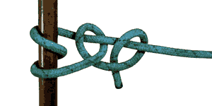
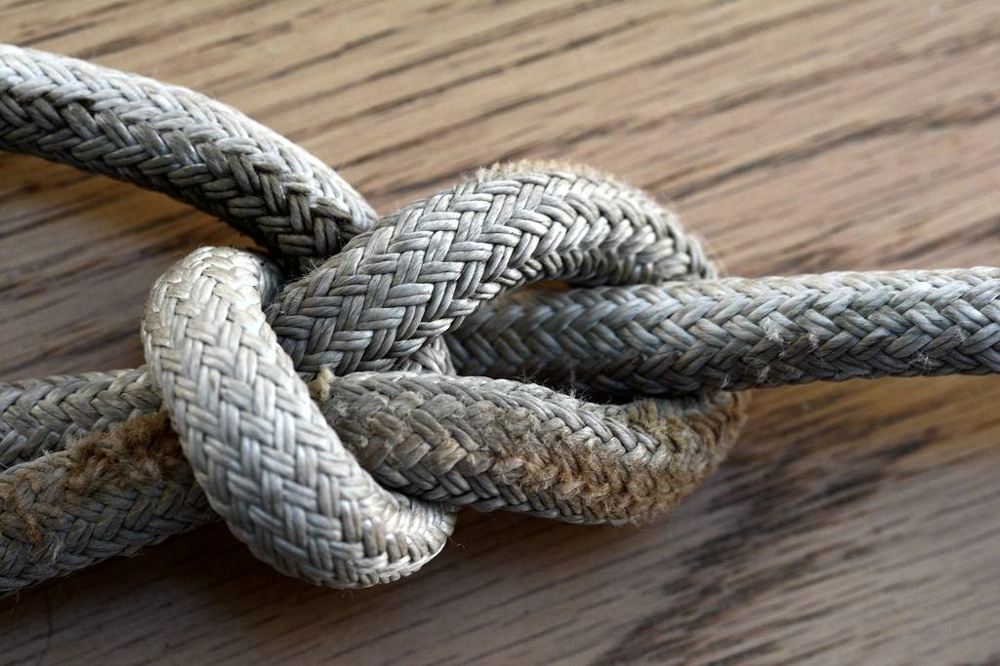

**Essential Line Handling for Boats**
Published 2022-12-23; Last updated 2024-08-04
This article describes the essential knots and other rope handling
techniques for recreational boating. Despite the common perception,
you really do not need to know how to tie many knots to begin to
contribute effectively on a boat. That even includes not even
needing the famous bowline knot at first!
Working ropes are called "*lines*" on a boat. Surprisingly, the most
useful line handling skills are ones that many experienced sailors
still perform incorrectly: (dock) *cleating*, *coiling three-strand
mooring lines*, and *coiling braided lines*. You can level up your
nautical expertise and be a great asset on board any boat by learning
to perform these properly. They are guaranteed to arise on every
outing. They are also something the skipper is often not able to do
personally while at the helm, and so appreciates the help with.
 Once you can perform coiling and cleating, learn to tie on fenders
with a round turn and two half hitches. This is something that also
arises every outing on larger boats. The skipper can do it themselves,
but it is a big help to have others able to.
If on a sailboat, proper use of *manual winches* and *clutches*
(jammers) is next. Finally, add a few key knots and other
techniques. The set of skills for everyday boating is surprisingly
small. In this article, I call out the minimal set of line handling
skills that are sufficient to take you through years of boating and
intermediate level sailing in particular.
Of course, interesting knots and other rope techniques are themselves
a fascinating subject. There is no reason to stop at only the
essentials if you find this topic interesting.
Holding a Rope
=====================================================================
On a dinghy, grab ropes on a boat with your thumb pointing towards
your chest and the end under tension by your pinky. Hold them at least
1/3 m (one foot) away from anything that could pinch your hand, such
as a cleat, winch, or pulley.
On a larger keelboat, be even more careful about only grabbing ropes
far from a pinching or crushing hazard. It is theoretically a good
idea to have the pinky end of your hand towards the load, but may be
impractical on larger boats because of the angle from which the ropes
come to you.
Always hold a rope that will be under significant strain around some
kind of rounded surface instead of directly from the load. This can be
a cleat on the dock for a dockline or a wrap around a winch on the
boat. This adds enough friction to prevent you from being pulled
forward and lets you control the direction of force on your arm.
Be careful to avoid accidentally sitting, leaning, or standing on a
rope. It is dangerous for you. It could also cause a problem with
operating the boat--a "foot cleat" stops the line from moving!
Stepping on ropes also grinds dirt into them, which weakens them.

Never wrap a rope around your hand to get more purchase. This can bind
dangerously and prevent you from releasing the rope in an emergency,
burn your hand, or cut off circulation. If you can't get a good enough
grip, you can [wrap it inside of your hand](https://sailing-blog.nauticed.org/how-to-pull-on-a-line/), use a winch, ask for help, or put on gloves.
Crew Techniques
=====================================================================
Below are the basic line handling skills for crewing or being a guest
on a sailboat. I prioritize
mastering them in this order, based on how helpful they are to have
crew know.

For example, on a keelboat you will coil lines after casting off and
cleat them on return every time. You're then going to operate a winch
at least ten or twenty times every sail. So, those are a high priority
to learn.
## Coiling a covered line

Needed for storing cover-and-core, braided
running rigging lines on a sailboat, such as halyards and sheets. Some
boats also use covered lines for mooring. The linked video shows the
figure 8 coil, which I find easiest to teach and perform reliably.
There are two other methods for achieving the same outcome via twists.
These are
[twisting each coils alternating directions](https://www.animatedknots.com/coil-unattached-rope-knot),
and
[twisting the line as the coil comes in](https://www.youtube.com/watch?v=K-TV9cnzI3E).
The catch is that if you get the twists wrong it is much easier to
make a mistake with these methods, and then the line will not run
freely through blocks when it is later used.

For a fixed line, start from the working (attached) end and coil
towards the bitter (free) end so that twists work their way out. If
there is a winch nearby, that can be used as a tool
[to explicitly make the figure 8s](https://youtu.be/2333Ff8GJDw?t=448),
which is a very fast method.
## Coiling three-strand lines

Unlike covered, braided lines, three-strand lines can be coiled in a
circle instead of figure 8s. This is because they already have a twist
built in to them. (They are also used exclusively for mooring and
towing, so aren't run through blocks when in use).
Bring the line from one hand to another, laying it flat to make big
circles that lie against each other. Do not coil around your elbow.
Wet mooring lines are best stowed either hanging in a locker or simply
[looped over a rail](https://youtu.be/LNav2agjHrA?t=47). Dry mooring
lines can be stowed with a coil and crown in a locker.
The figure 8 method can be used for three-strand lines as well.
## Round turn and two half hitches (RT2HH)
[](https://eoceanic.com/sailing/tips/16/135/a_very_useful_general_purpose_knot_the_round_turn_and_two_half_hitches/)
For tying fenders to a lifeline; docking to a bull rail, post,
or ring; attaching an anchor to the rode; and fastening anything
to a pole, bar, or ring.
Prefer RT2HH to a bowline when you have to tie or release under
tension, or need a tight wrap. This knot is just a full wrap plus a
clove hitch. It can be finished with extra half hitches to further
prevent slipping or take up extra line on the working end.
When tying a boat to a bull rail, first run the line _under_ the rail
when coming off the boat and then start the wraps.
## Winch operation

Needed for tensioning halyards, sheets, and outhauls. This is only
essential for keelboats, as powerboats and dinghies don't have these
kinds of winches. Proper winch operation is as much about not injuring
your hands or back as treating the boat well.
### Dressing
To dress (a.k.a. set up, load) the winch:
1. Remove _and stow_ the handle.
2. Wrap the line three or four times _clockwise_ around the drum.
Do not let the line overwrap itself.
3. Bring the line up over the metal tongue
4. Pull it about 270 degrees around through the self-tailing jaws at the top
### Trimming
To trim a line on a winch:
1. Grab the line after the self-tailing jaws with your hands
far from the winch and thumbs pointed away from the winch.
Do not wrap the line around your hand.
Pull the line by hand until it becomes too hard.
2. Lock the handle in place.
3. Put your weight over the top of the winch and turn the handle.
On a dual-speed winch one direction will have twice the power
as the other. On a ratcheting winch, turning counter-clockwise
will do nothing.
### Easing
To ease a line on a winch:
1. Put your palm around the wraps to keep them from overriding
and provide some friction.
2. Grab the free end of the line with your other hand, keeping
your thumb pointing away from the winch and keeping your
hand about 30 cm away from the drum.
3. Unwrap the line from the jaws, retaining the wraps.
4. Slowly let the line pass throuh your hand.
5. Re-wrap through the jaws when done.
### Releasing
To free a line from a winch when tacking or gybing:
1. Remove _and stow_ the handle.
2. Keeping your hand far from the winch, unwrap the line from the jaws
while maintaining tension.
3. When the tension leaves the working end, fling the line in counter-clockwise
circles to make it completely clear of the drum.
### Clearing an Override
Always be careful to avoid the lines around the drum overriding.
To [clear an overriden line on a winch](https://www.youtube.com/watch?v=STsM2khBLU4):
1. Tie an icicle hitch or rolling hitch around the working end with a second line.
2. Tension that second line on another winch.
3. Free the tangled original line when it is not under tension.
4. Re-tension the original line on the original winch.
5. Ease the second line and remove the hitch.
## Clutch/Jammer
 Clutches aka jammers allow multiple lines to be used with the same winch by holding
the ones that are not being adjusted.
To jam a winched line, close the clutch and then remove it from the winch.
To put it on the winch for adjustment, first dress the winch, second _put the line
under tension_, and then third open the clutch all of the way. The handle
of the clutch will be forward, not up.
Do not pull a line through a closed clutch or release a clutch on an untensioned
line. It will pull the cover through the jaws while the core slips, detaching
them and putting excess wear on the cover. Over time that will cause the clutch
to not grip the line tightly.
## Cleating

Needed for docking, and some halyards and outhauls. Always begin
around the _far_ cleat horn relative to the working end. For docking,
make one or more _full_ wraps at the base depending on the relative
size of the line and cleat. Finish with the locking hitch or a full
wrap (making an "OXO"), depending on the relative risks of binding
vs. slipping. For halyards and outhauls the initial full wrap is not
needed.
 Some people do not make the initial full wrap for docking when
they will only be docked for a short time. I always anticipate that I might be docked
or away from the boat longer than expected and make the full wrap.
Half a second while cleating is a small tradeoff to eliminate the risk
of a dockline coming loose!
## Throwing a line
[This is how](https://www.boatus.com/expert-advice/expert-advice-archive/2014/june/how-to-throw-a-line-properly) to get a line to someone on another boat or a dock
without it going in the water or hitting them in the face. The key
points are:
1. Throw about half of the coils and let the other half run out.
2. Aim for the catcher's outstretched arm on the side, not their face and body.
3. Aim for a point well past the target when throwing a dry line. It is lighter
than you might expect.
## Sail ties

Make a simple loop over the mainsail and boom, avoiding catching the
mainsheet or other lines in it. Pass the end of the sail tie webbing
through its own eye at the other end and cinch reasonably tight, like
a belt on your waist. Don't crank it down hard.
Finish by tying a slip not with the loose end. The loop of the slip
knot and the tail should be about equal length.
Skipper Techniques
=====================================================================
Depending on your boat, you will occasionally need to use some of these
techniques. They are in the skipper section not only because they are
less frequently employed, but because they usually don't have to be
done very quickly but do have to be done exactly correctly or there
will be a problem later.
## Dinghy halyard bobble

A ball passed through a loop has replaced the traditional
[studding sail halyard bend](https://www.youtube.com/watch?v=ukxwS8RrJxg)
for the sail end of dinghy halyards. It saves a few centimeters at
the top of the halyard and is and easier to tie and untie,
especially with cold, wet hands in gloves.
(The next level up is a
[diamond knot](https://www.youtube.com/watch?v=8qdrfqEfzkw) in a
dyneema halyard, which can the reduce chafe that is an issue for very
frequent dinghy racers.)
## Icicle hitch
 Needed for anchor snubbers and
clearing a jammed winch, and can also be used to attach objects to
vertical poles. This hitch slips in one direction for adjustment and
grabs in the other direction for working. It must be tied in a line
parallel to the bar or line that is under tension. Only use when
there will be continuous tension after the knot is tied.
[To tie, wrap the hitch line](https://www.animatedknots.com/icicle-hitch-knot-end-method) around the target pole or line moving _towards_
the load (this is the opposite of a rolling hitch start!)
Bring the hitch line back past itself and loop once more in the
opposite direction, finishing with a cow hitch around the target line
that passes under itself twice.
When complete, the wraps should spread out from the knot towards the load.
[Practical Sailor](https://www.practical-sailor.com/boat-maintenance/gripping-hitches-for-loaded-lines) and
[BoatUS](https://www.boatus.com/expert-advice/expert-advice-archive/2013/june/gripping-hitches) both recommend
the [icicle hitch](https://www.animatedknots.com/icicle-hitch-knot-end-method) instead of the [rolling hitch](https://www.youtube.com/watch?v=IVOR9lOaEQg)
for slippery lines and snubbers because it grips the same or better and is easier
to untie later.
## Flemish coil


The Flemish coil is a way of storing mooring line tails on a dock. Start the coil flat on the dock at the center, and just keep it flat and spin the entire coil around until
it has consumed all of the line. Do not wrap the line around a fixed coil.
## Trucker's hitch

The Trucker's Hitch uses a rolling hitch and a slip knot or figure 8, and can be doubled up for
increased purchase. It is needed for attaching a small boat to a
trailer or roof rack, tying down a boat cover, and rigging jack
lines.
## Bowline
[](https://www.animatedknots.com/bowline-knot)
The bowline is used
for attaching sheets to a sail clew, tying on a dinghy painter,
tying to a mooring ball, attaching a boom gybe preventer, tying
around a person or as a foot loop for a rescue, and generally is the
go-to (and arguably overused) sailing knot. In performance dinghies
a bowline is often needed to connect the outhaul and cunningham when
the boom is attached each session.
Despite the name, this is confusingly _not_ the way to attach the
mooring line to the bow or the dock.
The largest drawbacks of the bowline are that it cannot be tied under
tension and can work loose if tension is not maintained.
## Figure 8
The [Figure 8](https://www.animatedknots.com/figure-8-knot), a.k.a. Flemish knot,
is a stopper knot that is easily untied, good for the ends of jib/genoa sheets,
the mainsheet, or a small boat's vang. Spinnaker sheets [do not use stopper knots](https://www.quantumsails.com/en/resources-and-expertise/articles/three-common-spinnaker-mishaps-and-how-to-fix-them).
## Double overhand
[The double overhand](https://www.animatedknots.com/double-overhand-stopper-knot) is
a stopper knot that is more permanent than a figure 8. Good for
halyards as a stopper at the bottom, or for stopping the
ball at the top of a dinghy halyard.
# Knot Tips
Knots weaken lines by as much as 50%. The line will break at the
knot, not in the middle of the tensioned line. For strength,
permanent attachments are spliced in lines or sewn in webbing
instead of tied. Existing loops are
[best linked](https://www.animatedknots.com/girth-hitch-knot) by
shackles instead of knots.
Tying more knots in a line rarely makes a better hold, and
definitely makes it harder to untie. The exception is that
some knots in slipperier ropes benefit from finishing with
a few half hitches.
Modern synthetic lines do not hold knots as well as traditional
lines. Most knots will [slip easily](https://www.youtube.com/watch?v=P7gI4YF0D2Y) in something like an unsleeved
dyneema/spectra line. Even modern three-braid and sleeved
lines have much less friction than tarred hemp, so beware
of knot information that is more than 20 years old.
Vocabulary
=====================================================================
Some general rope vocabulary, mostly for fun because this isn't
essential in practice:
[Working end](https://www.netknots.com/rope_knots/rope-knot-terms)
: The free end of a line used to tie a knot.
[Standing part](https://www.netknots.com/rope_knots/rope-knot-terms)
: The part of the line attached to something else, so not available
to manipulate for tying a knot.
[Bight](https://www.netknots.com/rope_knots/rope-knot-terms)
: Some part of the middle of a rope. This is used when referring to
tying a knot "on a bight", meaning without a working end available.
Lazy line
: A line that is not currently in use or under tension because some
partner rope on the other side is under tension. Frequently
used for the sheets, the lines attached to the jib sail, and running
backstays, which are lines that support and tension the mast.
Working line
: A line that is under tension.
[Bitter end](https://www.grammar-monster.com/sayings_proverbs/bitter_end.htm)
: The end of the anchor line that is tied to the boat.
Sleeve
: The woven covering providing UV protection and friction on a modern line.
Core
: The interior of a modern line, which provides the strength.
I cover the names of specific lines for sailing and mooring in my
other guides. They aren't "essential", either. In cases where you need
to know that, you're with someone and they will clarify, such as "the
big red rope on the left side of the boat"; you are by yourself and
don't need to know the name; or you are reading and have time to look
it up.
Next Steps
=====================================================================
This guide for rope essentials is of course only the beginning of rope
techniques employed on boats, although it covers 99% of daily
use. There's a wonderful world of knots for all kinds of line and
purposes to learn after these.
I use maybe another ten knots occasionally for specific purposes,
including the
[slip knot](https://www.youtube.com/watch?v=bxnkth1n_2A),
[double fisherman bend](https://www.animatedknots.com/double-fishermans-bend-knot),
[halyard hitch](https://www.youtube.com/watch?v=zEEYkfINomY),
[cow hitch/lark's head](https://www.animatedknots.com/cow-hitch-knot-end-method),
[sheet bend](https://www.youtube.com/watch?v=MITXMnu8jo8)/double sheet bend, and
[reef (square) knot](https://www.youtube.com/watch?v=0Y_iorha2k4).
Line maintenance skills such as
[splicing](https://www.animatedknots.com/short-splice-knot),
[eye splicing](https://www.animatedknots.com/eye-splice-knot),
[fusing](https://www.youtube.com/watch?v=op4yhe3Hbno),
and [whipping](https://www.youtube.com/watch?v=3ZCXhdzvQrU) are essential for boat maintenance and likely more
important than learning most esoteric knots, which are of more
aesthetic and historical interest than practical use.
If you _must_ tie knots in unsleeved dyneema/spectra, two knots
that Evans Starzinger developed and recommends are:
- [EStar Hitch](https://www.animatedknots.com/images/estar_hitch.gif)
- [EStar Stopper](https://www.animatedknots.com/estar-stopper-knot)
These can still slip, though--prefer splicing.
Some interesting sources for going down the rabbit hole on
knots are:
- [Animated Knots by Grog](https://www.animatedknots.com/)
- [The Ashley Book of Knots](https://www.liendoanaulac.org/space/references/training/Ashley_Book_Knots.pdf)
- [International Guild of Knot Tyers Forum](https://forum.igkt.net/index.php)
Beware that all of them have information that may sound authoritative
but in practice not be fully accurate for your exact situation, type
of line, or application.